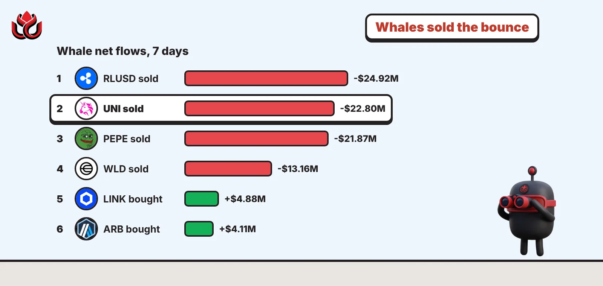
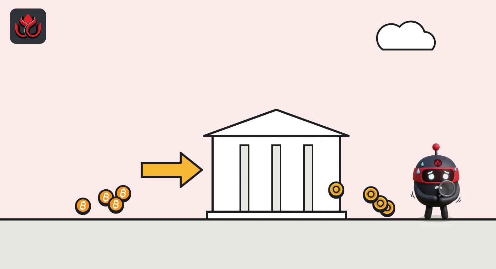
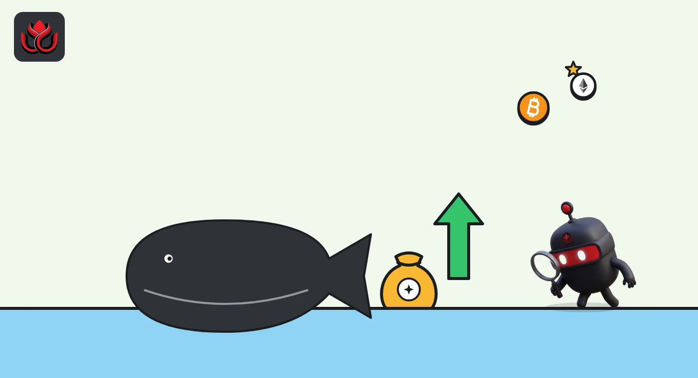

Whales sold $22.8 million of UNI while it rose 7%, and bought LINK and ARB
Big wallets used the late October bounce to sell, not buy. DeepSea's 7-day data shows whales net selling RLUSD, UNI and PEPE and making only small purchases of LINK and ARB, as bitcoin closed below $78,000 on October 29.

Key points
- DeepSea showed whales net sold $24.92 million of RLUSD, $22.80 million of UNI and $21.87 million of PEPE on Ethereum over 7 days, checked late on November 1, 2026, ET.
- The biggest whale net buys DeepSea showed were Chainlink (LINK) at +$4.88 million and Arbitrum (ARB) at +$4.11 million.
- On CoinGecko, UNI was up 7.1% and PEPE 15.3% over seven days, so whales were selling into strength.
 What DeepSea's data shows
What DeepSea's data shows
Large wallets sold into late October's bounce. DeepSea tracks "sharks" and "whales", wallets that hold or move very large amounts. Each token page shows a 7-day "whales net" figure: whale buying minus whale selling. LC Insight checked the pages below between 11:35 and 11:44 p.m. ET on November 1, 2026, so the window covers the last days of October.
On the sell side, DeepSea showed a whale net of minus $24.92 million on Ripple's RLUSD stablecoin, minus $22.80 million on Uniswap's UNI and minus $21.87 million on PEPE, all on Ethereum. Coinbase's wrapped bitcoin, cbBTC, showed minus $20.64 million. DeepSea labels the UNI page "Big wallets are selling".
On the buy side, whales were net buyers of LINK at +$4.88 million and of ARB on Arbitrum at +$4.11 million. DeepSea also showed $3.8 million of ARB moving to cold wallets over the same 7 days.
Data: DeepSea (desea.io), checked November 1, 2026, 11:44 p.m. ET.
Selling into a bounce
The UNI numbers stand out because the price went the other way. CoinGecko showed UNI at $7.27 early on November 2 (UTC), up 7.1% over seven days, with a market value of $4.54 billion. Its daily closes moved from $6.46 on October 29 to $7.21 on November 1. Whales used that bounce to sell, according to DeepSea.
PEPE followed the same pattern. CoinGecko listed a 15.3% seven-day gain and a $2.07 billion market value, while DeepSea's whale net was minus $21.87 million.
Not every sale met a rising price. Worldcoin's WLD on Optimism had a whale net of minus $13.16 million on DeepSea, and CoinGecko showed WLD down 11.7% over the week. Shiba Inu (SHIB) had minus $10.04 million and a 2.0% weekly drop. Ethena's ENA had minus $5.66 million and fell 8.2%.
Selling in wrapped bitcoin and stablecoins
A large share of the whale selling was in tokens pegged to other assets. Alongside cbBTC, DeepSea showed a whale net of minus $21.25 million on BTCB, the bitcoin token on BNB Chain, and minus $5.77 million on WBTC on Ethereum. In stablecoins, besides RLUSD, it showed minus $20.22 million on USDD on Tron and minus $8.31 million on USDG on Ethereum.
Moves in wrapped bitcoin and stablecoins do not always mean selling the underlying asset. They can mean a wallet is repaying a loan, switching chains or sending funds to an exchange. Still, the timing lines up with a weak market. CoinGecko's daily closes put bitcoin at $81,274 on October 28 and $77,839 on October 29, the day of the Binance breach. It closed at $78,311 on November 1. Trading volume on October 31 reached $201.3 billion, against $24 billion to $40 billion a day earlier in the week.

Whale net flows by token
Whale net flows by token over 7 days, as shown on DeepSea token pages late on November 1 (ET). Bars show the size of each flow; the label gives the direction.
Whale net flows, 7 days, checked November 1, 2026 (ET)
US$ million (absolute size)
Source: DeepSea token pages (desea.io), checked November 1, 2026, 11:35 to 11:44 p.m. ET
Where whales were buying
The buy list was shorter and smaller. Besides LINK and ARB, DeepSea showed whale nets of +$2.15 million on Ondo (ONDO) and +$1.10 million on Quant (QNT). On CoinGecko, LINK was up 0.3% on the week at $11.37, ARB down 1.9% at $0.1629, ONDO up 0.5% and QNT up 6.8%.
ARB's daily closes on CoinGecko dipped to $0.1542 on October 29 before recovering to $0.1638 by November 1. That suggests some whales bought the dip, though DeepSea does not show when each trade happened.

Who the biggest wallets are
On DeepSea's KOLs and Sharks page, the top shark by 30-day profit, labeled Holdfc76, showed about +$61.03 million, followed by Hold6e26 at about +$28.89 million and HoldpEag at about +$15.87 million. DeepSea marks these figures as estimates.
The live shark view during LC Insight's check had Hold6e36 tied for first with about $10 million of 24-hour volume. Its DeepSea page showed $20.01 million of assets, all in an Aave lending position of USDC on Arbitrum, and 62 trades in 30 days. DeepSea's smart money board listed a Hyperliquid trader labeled SM6e36 second for 7-day profit at +$17.34 million. Both labels point to the same shortened wallet address on DeepSea. DeepSea's October 12 to 18 report shows SM6e36 opening ether and bitcoin shorts of more than $200 million each at 5x leverage on October 14.
Among KOLs, DeepSea's 7-day leader was bizyugo.hl at +$10.77 million.
LC Insight analysis
This section is our reading of the facts above, not a statement of fact.
- We think the UNI and PEPE sales are the clearest signal here. Whales net sold more than $44 million of the two combined while prices rose. Selling like that often caps a bounce, though it does not have to.
- Heavy moves in cbBTC, BTCB, WBTC and stablecoins during the week of the Binance breach look like big holders reshuffling collateral and chains. We would not read them as a direct bet against bitcoin.
- The LINK and ARB buying is small next to the selling. It shows selective interest, not a broad return of whale demand.
What's next
- Whether UNI holds above $7 after the whale selling
- Further cbBTC and BTCB outflows
- Whether SM6e36 adds to or closes its Hyperliquid positions
- DeepSea's first weekly report covering late October
Disclaimer. This article is based on public information and the sources listed below as of the update time shown. It is for information only and is not investment, legal or tax advice. Figures may change as companies and authorities publish new data.
Sources
- DeepSea, token pages (whales net, 7D), checked November 1, 2026, 11:35 to 11:44 p.m. ET
- DeepSea, KOLs and Sharks, checked November 1, 2026, 11:35 p.m. ET
- DeepSea, Weekly Smart Money and Global Money Flows Report, October 12 to 18, 2026
- CoinGecko, Uniswap (UNI), checked November 2, 2026
- CoinGecko, Bitcoin historical data
- CoinGecko, Arbitrum (ARB) historical data